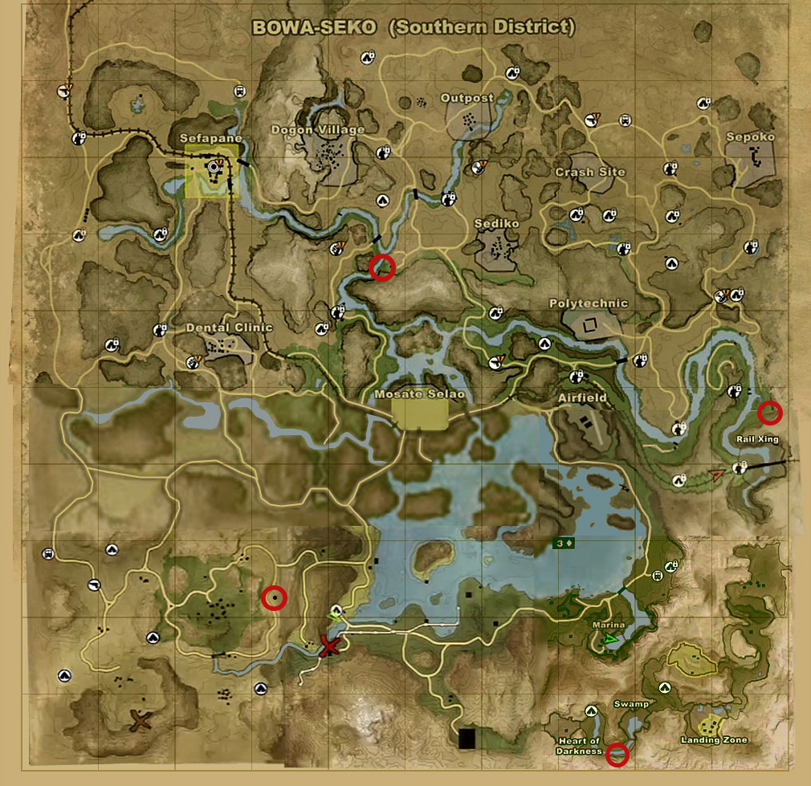
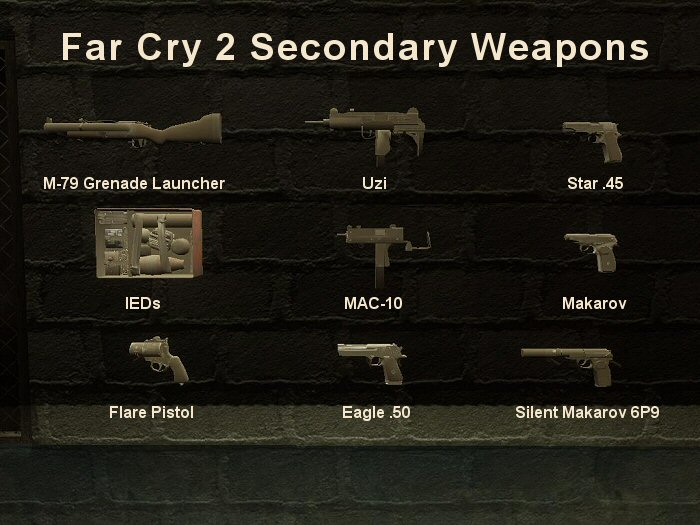

A
top-down shooter version for mobile phones was developed and published by
Gameloft. It is the second mainline entry in the Far Cry series. Set in a
fictional African country engulfed in civil war, the storyline follows a
mercenary who is assigned to kill the Jackal, a weapons dealer inflaming
the conflict. The player navigates the open world, completing missions for
factions and allies called Buddies while managing their health and
equipment. A competitive multiplayer mode allows players to fight in teams
or as individuals. Production took three and a half years, with concept
work beginning during the production of Far Cry Instincts (2005). Director
Clint Hocking conceived the setting and design, which he wanted to be more
realistic than the original Far Cry (2004).

The narrative and tone,
inspired by Joseph Conrad's novella Heart of Darkness and Dashiell
Hammett's novel Red Harvest, focused on the lengths to which people would
go to survive through terrible circumstances. The game was built using
Dunia, a game engine created by Ubisoft based on the original game's
CryEngine. In pursuit of realism, the developers added real-time and
reactive elements for enemies and the environment. The music, composed by
Marc Canham, includes vocals by Senegalese singer Baaba Maal. Far Cry 2
received positive reviews from critics, with praise for its setting,
open-ended gameplay, Buddies, world design and visuals; however, its
writing, artificial intelligence and technical issues received negative
attention.

It received multiple game award nominations. By January 2009,
the game had sold nearly three million copies worldwide. Far Cry 2 has
continued to receive attention for its ambition and survival mechanics.
The team used feedback from the game to develop Far Cry 3 (2012).